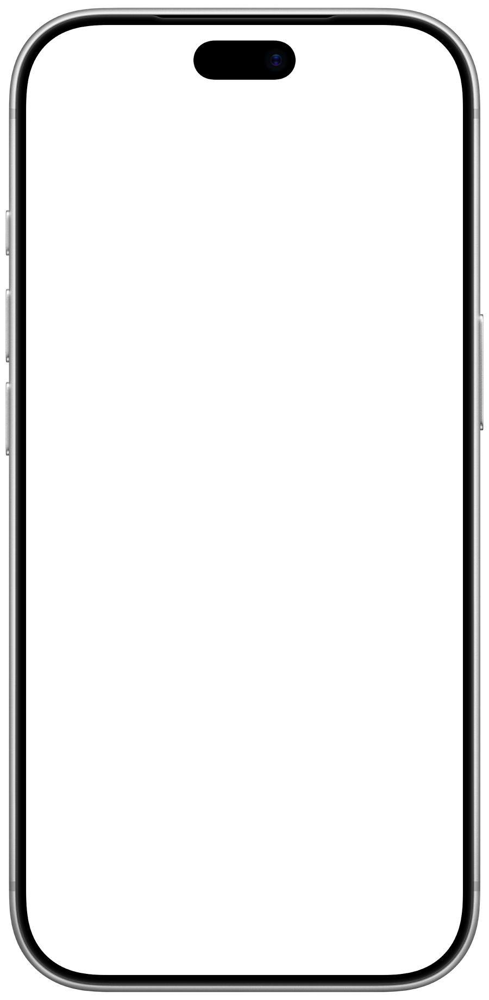

Помощь в аналитике доходов и трат
Задача
Придумать, как Тая замечает потребность пользователя и предлагает помощь до того, как он сформулирует запрос.
Решение
Когда человек открывает доходы или траты, Тая предлагает помочь разобраться в цифрах.
Я сделала три сценария с одной точкой входа: проверить зарплатные выплаты за месяц, посмотреть траты без крупных покупок и учесть в расчете деньги, которые вернули друзья. Тая уточняет детали и собирает индивидуальный отчёт.
